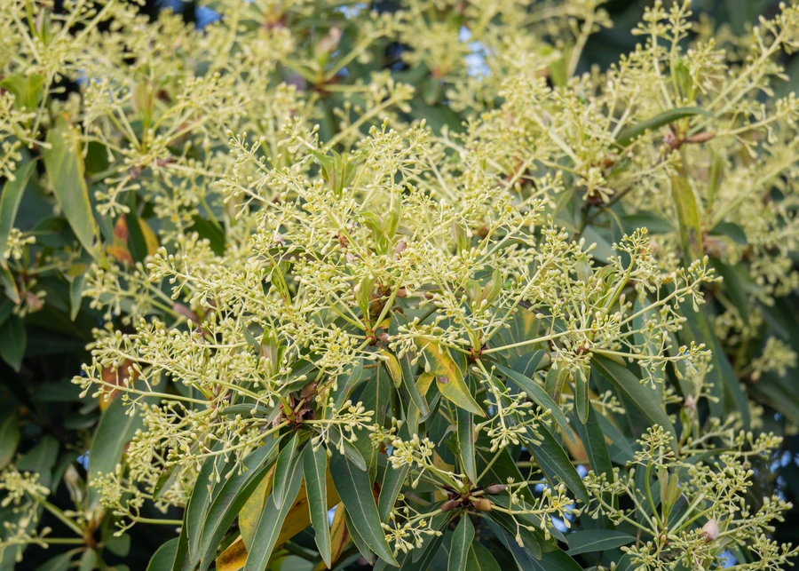

乔木 · 植物界
刨花楠 Machilus pauhoi

樟科润楠属常绿乔木，木材刨花浸水可析出黏液，旧时用于粘合器物，故得名刨花楠，是中国南方优良用材树种。
- 分类
- 门被子植物门纲木兰纲目樟目科樟科属润楠属
- 栖息环境
- 海拔 1000 米以下的山地常绿阔叶林，喜温暖湿润、云雾较多的山谷
- 地理分布
- 中国浙江、福建、江西、湖南、广东、广西等地，为中国特有树种
- 保护级别
- 暂无 IUCN 评估；野生大树稀少，部分产区列为省级保护植物
物种志
刨花楠为樟科润楠属常绿乔木，高可达二十米，树皮灰褐色，老时呈片状剥落。叶片互生，革质，倒卵形至椭圆状披针形，先端渐尖，表面深绿色有光泽，背面灰绿色并被柔毛。花小，黄绿色，组成腋生的圆锥花序，花期三至四月；浆果球形，成熟时蓝黑色，果期七至八月。
刨花楠产于浙江、福建、江西、湖南、广东、广西等地，生于海拔一千米以下的山地常绿阔叶林中，是中国特有的珍贵用材树种。它喜温暖湿润和半阴环境，适宜土层深厚、排水良好的酸性红壤。木材纹理直、结构细，刨花浸水后析出黏液，旧时用于粘合纸张与器物；树皮和叶可提取芳香油，种子可榨油。由于天然林长期采伐，野生大树已不多见，各地多将其列为重点保护对象。
形态与习性
- 株高15–20 m，树皮灰褐色
- 花期3–4 月，圆锥花序腋生
- 果期7–8 月，浆果成熟时蓝黑色
- 光照幼树耐阴，成树喜光
- 水分喜湿润，忌长期干旱
- 土壤深厚肥沃的酸性红壤
- 主要用途优良用材，刨花可制粘合剂
趣味知识
- 刨花楠的木刨花浸水后会渗出黏滑汁液，古人用它粘合纸张、调和颜料。
- 其木材结构细致、不易变形，是制作家具、乐器与细木工的上等材料。
- 刨花楠为中国特有树种，天然更新较慢，野生大径材已十分稀少。